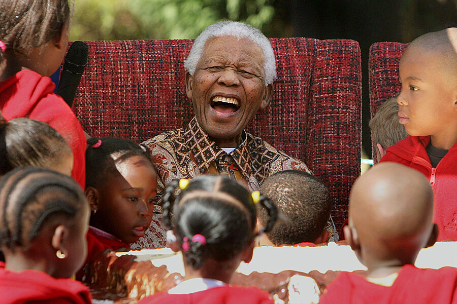

Nelson Mandela
The first black president in his country
Here's a timeline of Nelson Mandela's life:
- 1918 - Born Rolihlahla Mandela at Mvezo in the Transkei
- 1925 - Attends primary school near Qunu (receives the name ‘Nelson’ from a teacher)
- 1930 - Father dies. Entrusted to Thembu Regent Jongintaba Dalindyebo at the age of 12 While his autobiography Long Walk to Freedom places Mandela's father’s death in 1927, h
- 1918 - Born Rolihlahla Mandela at Mvezo in the Transkei
- 1934 - Undergoes initiation; Attends Clarkebury Boarding Institute in Engcobo
- 1937 - Attends Healdtown, the Wesleyan College at Fort Beaufort
- 1939 - Enrols at the University College of Fort Hare, in Alice
- 1943 - Graduates with BA from Fort Hare; Enrols for an LLB at Wits University
- 1948 - Elected national secretary of the ANCYL
- 1951 - Elected President of the ANCYL
- 1996 - Divorces Winnie Mandela
- 2013 - Passes away at home in Johannesburg